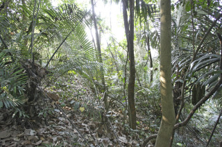
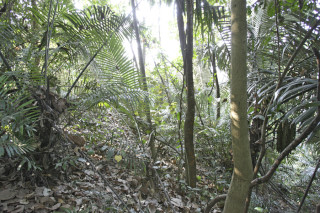
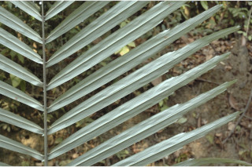
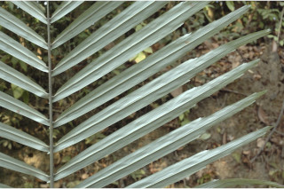

Monoecious palm, trunk up to 6 m tall.
ಉಭಯಲಿಂಗಿ ಪುಷ್ಪಗಳನ್ನೊಳಗೊಂಡ ತೆಂಗು ಜಾತಿಯ ಮರಗಳು; ಕಾಂಡ 6ಮೀ. ಎತ್ತರದವರೆಗೆ ಬೆಳೆಯುತ್ತವೆ.
ദ്വിലിംഗി പന, തടിക്ക് 6 മീറ്റര് വരെ ഉയരം.
சிறிய மரம்.
Trunk grey, densely clothed with the black fibrous remains of the leaf_sheaths.
ಕಾಂಡ ಬೂದು ಬಣ್ಣದ್ದಾಗಿರುತ್ತದೆ. ಕಾಂಡವು ಶೇಷವಾಗುಳಿದ ಎಲೆ ಒರೆಯ ದಟ್ಟವಾದ ಕಪ್ಪು ಬಣ್ಣದ ನಾರಿನಿಂದ ಆವೃತವಾಗಿರುತ್ತವೆ.
നരച്ച നിറത്തിലുളള തടി, ഇല പത്രച്ഛ്ദത്തിന്റെ കറുത്ത നാരുകള് കനത്തില് നിറഞ്ഞിരിക്കുന്നു.
சாம்பல் நிறமானது, கருப்பு நிறமான நார் போன்ற இலை உறையின் நிரந்தரமான பகுதி அடர்த்தியாக தண்டைச் சுற்றி காணப்படுகின்றன.
Leaves compound, pinnate, 3.5-8 m long; leaflets to 30-100 cm x 2-2.5 cm, linear ensiform, apical one often confluent and obconic, apex narrowed, sometimes shortly, unequally 2-lobed, base asymmetricaly auricled, dark green above, glaucous beneath, margin entire or toothed in the upper half.
പിചഛക ബഹുപത്രങ്ങള്, 3.5 മുതല് 8 മീറ്റര്വരെ നീളം; പത്രകങ്ങള്ക്ക് 30 മുതല് 100 സെ. മീ വരെ നീളവും 2 മുതല് 2.5 സെ. മീ വരെ വീതിയും, രേഖീയ - ഖഡ്ഗാകാരം അറ്റത്തെ ഒരെണ്ണം മിക്കവാറും ത്മമില്ച്ചേര്ന്നതും അപകോണാകാരവും, അഗ്രം നേര്ത്തതാണ്, ചിലപ്പോള് ചെറുതായി, അസമമായി് ദ്വികര്ണ്ണിതമാണ്, ആധാരം അസമമായ ചെവിയോടുകൂടിയതാണ്, മുകളില് കരിം പച്ച നിറം, കീഴെ നീലരാശികലര്ന്നത്, മേല്പകുതി അവിഭജിതമോ ദന്തുരമോ ആണ്.
இலைகள் சிறகுவடிவக்கூட்டிலைகள், 3.5-8 மீ. நீளமானது; சிற்றிலைகள் 30-100 X 2-2.5 செ.மீ., நீள்கோட்டு வடிவம், வாளைப்போன்றது, கூட்டிலையின் நுனியிலுள்ள சிற்றிலைகள் இணைந்தவை மற்றும் தலைகீழ் கூம்பு வடிவானது, அலகின் நுனி குறுகியது, சிலசமயங்களில் குட்டையானது, சமமற்ற இரண்டு பிளவுகளுடைய நுனிகளுடையது, அலகின் தளம் சமமற்ற காதுமடல் போன்றது, அலகின் மேற்பரப்பு கரும்பச்சையாகவும், கீழ்பரப்பு மெழுகு பூசினாற் போன்றும் காணப்படுபவை, அலகின் விளிம்பு சமமானது அல்லது அலகின் நுனி பகுதியில் ரம்ப பற்களுடையது.
Male and female spadices separated, 1 m long.
ಎಲೆಗಳು ಸಂಯುಕ್ತ, ಗರಿರೂಪಿ ಮಾದರಿಯದ್ದಾಗಿದ್ದು 3.5 ರಿಂದ 8ಮೀ ಉದ್ದವಿರುತ್ತದೆ. ಕಿರು ಎಲೆಗಳು 30 ರಿಂದ 100ಸೆಂ.ಮೀ. ಉದ್ದ, 2 ರಿಂದ 2.5ಸೆಂ.ಮೀ. ಅಗಲಹೊಂದಿದ್ದು ರೇಖಾತ್ಮಕ ಕತ್ತಿಯಾಕಾರದಲ್ಲಿರುತ್ತವೆ. ತುತ್ತ ತುದಿಯ ಕಿರು ಎಲೆಗಳು ಹಲವು ವೇಳೆ ಸಂಧಿಸುತ್ತವೆ. ಹಾಗೂ ತಲಕೆಳಗಾದ ಶಂಖುವಿನಾಕಾರ ಹೊಂದಿರುತ್ತವೆ. ಕಿರು ಎಲೆಗಳು ತುದಿ ಇಕ್ಕಟ್ಟಾದ ರೂಪದಲ್ಲಿರುತ್ತವೆ. ಕಿರು ಎಲೆಗಳು ಅಸಮವಾಗಿ 2-ಹಾಲೆಗಳಾಗಿದ್ದು, ಬುಡಭಾಗದಲ್ಲಿ ಅಸಮಕಿವಿಯಾಕಾರ ಚಾಚುಗಳನ್ನೊಳಗೊಂಡಿರುತ್ತದೆ. ಕಿರು ಎಲೆಯ ಮೇಲ್ಭಾಗ ಕಡು ಹಸಿರು ಬಣ್ಣವನ್ನೂ ತಳಭಾಗ ಮಾಸಲು ಬೂದು ಹಸಿರು ಬಣ್ಣವನ್ನೂ ಹೊಂದಿರುತ್ತದೆ. ಎಲೆಪತ್ರದ ಅಗ್ರದ ಮೇಲು ಅರೆಭಾಗ ನಯವಾಗಿ ಅಥವಾ ದಂತಿತವಾಗಿರುತ್ತದೆ.
ആണ്, പെണ് പൂങ്കുലകള് വെവ്വേറെയാണ്, ഒരു മീറ്റര് നീളം.
ஆண்மஞ்சரி மற்றும் பெண்மஞ்சரிகள் தனித்த ஸ்ஃபாடிக்ஸ் பாளைகள் கொண்டது, 1 மீ. நீளமானது.
Berry, hard, globose; 2-3 seeded.
ಹೆಣ್ಣು ಮತ್ತು ಗಂಡು ಹೊಂಬಾಳೆಗಳು ಬೇರ್ಪಡಿಸಿರುತ್ತವೆ ಹಾಗೂ 1ಮೀ. ಉದ್ದವಿರುತ್ತದೆ.
2 ഓ 3 ഓ വിത്തോടുകൂടിയ; ഗോളാകാരത്തിലുളള, ദൃഢമായ ബെറി.
முழுச்சதைகனி (பெர்ரி), கடினமானது, கோளவடிவானது; 2-3 விதைகளையுடையது.
 



 
